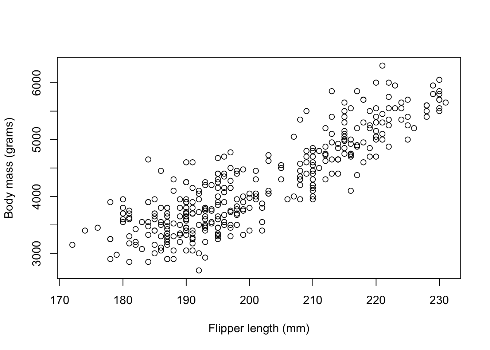
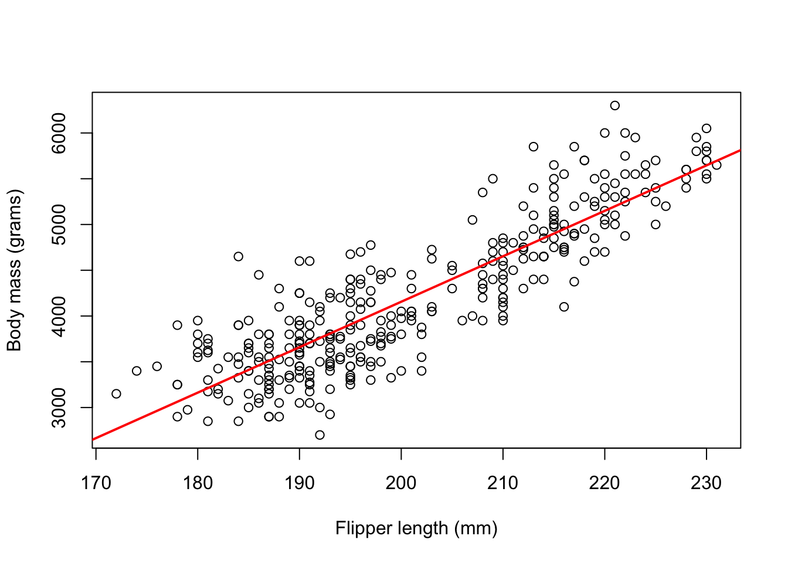
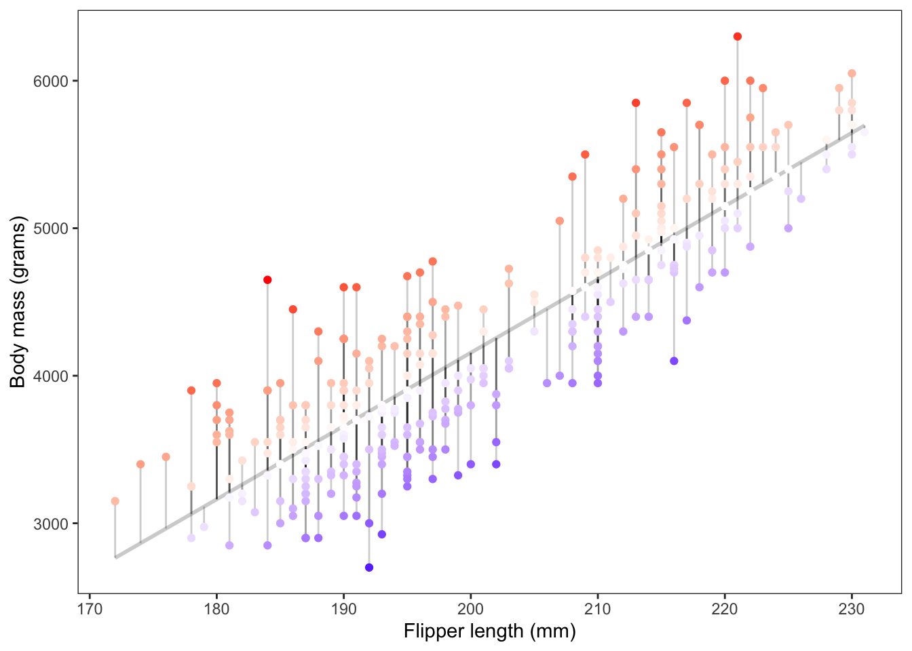
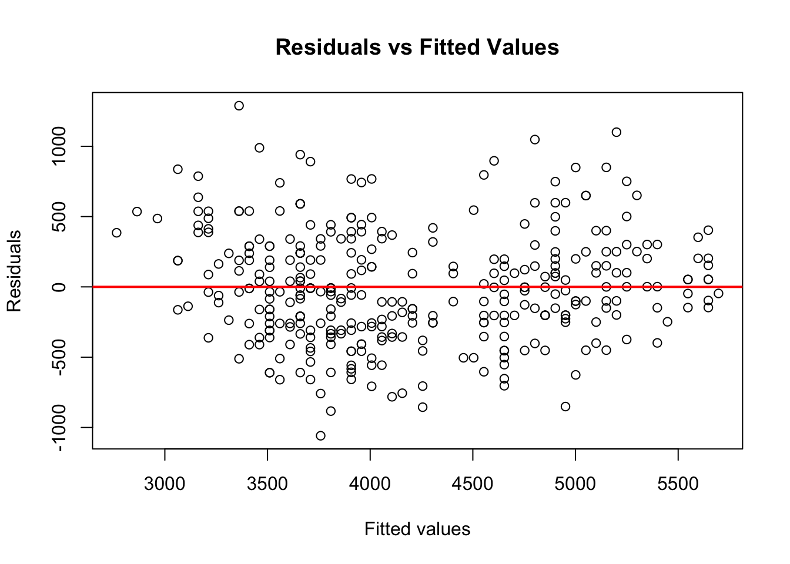
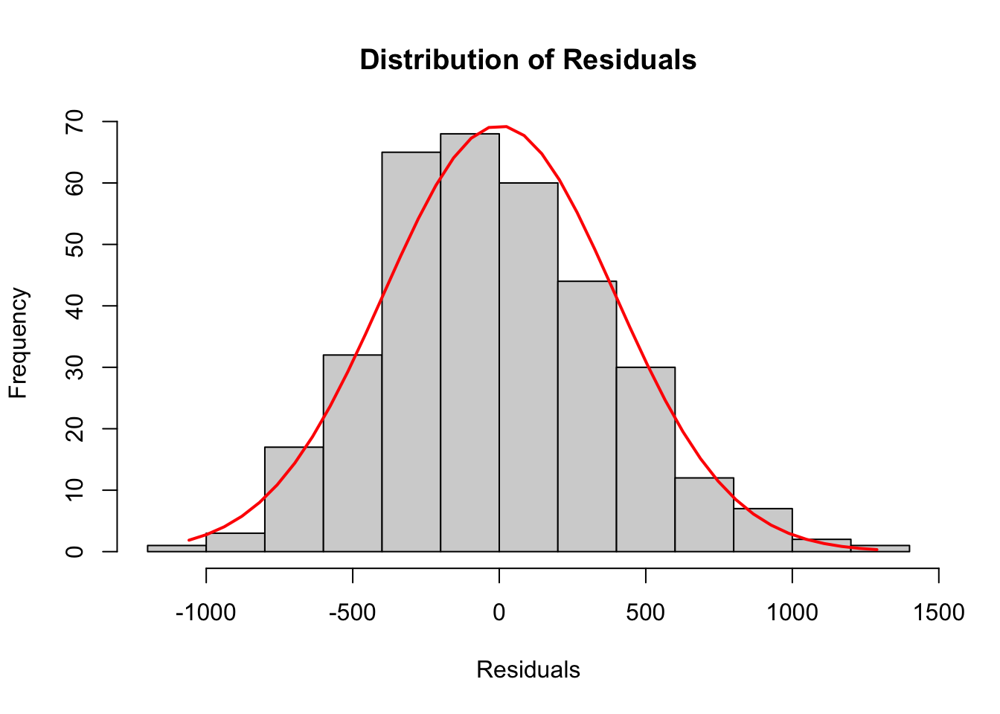
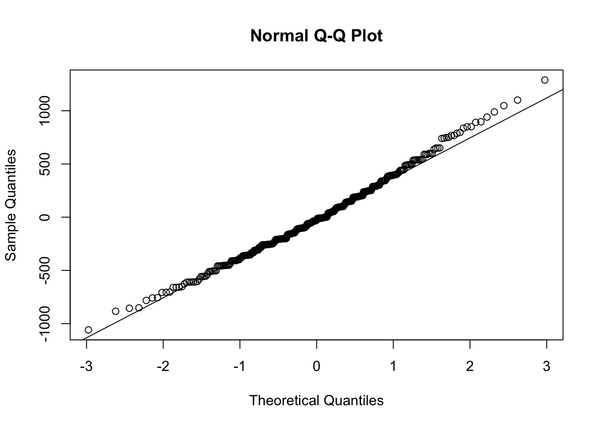

library(palmerpenguins)
library(mosaic)
library(ggplot2)Simple Linear Regression
Required Packages
theme_set(theme_bw())
theme_replace(panel.grid.minor = element_blank(),
panel.grid.major = element_blank())Introduction to Simple Linear Regression
Simple linear regression is a statistical method which allows us to predict a quantitative outcome \(y\) on the basis of a single predictor variable \(x\).
Sometimes \(x\) is regarded as the predictor, explanatory, or independent variable.
Similarly, \(y\) is regarded as the response, outcome, or dependent variable
We will only use predictor and response to denote our variables of interest. The goal is to define a statistical model that defines the response variable (y) as a function of the predictor (x) variable. Once, we built a statistically significant model, it’s possible to use it for predicting outcomes on the basis of new predictor values.
Below are all the numerical variables in our dataset
colnames(Filter(is.numeric,penguins))[1] "bill_length_mm" "bill_depth_mm" "flipper_length_mm"
[4] "body_mass_g" "year" For our simple linear regression model, we will consider the body mass (grams) of the penguins as the response variable and the length of the length of the the penguin’s flipper (millimeters) as our single predictor variable
Our model takes the form \[ (body\_mass_g) = \beta_0 + \beta_1 \cdot (flipper\_length_{mm}) + \epsilon \] where
- \(\beta_0\) is the intercept of the regression line, (when flipper_length_mm =0)
- \(\beta_1\) is the slope of the regression line
- \(\epsilon\) is the error terms
For simplicity we will remove any missing data from our variables of interest
missing_dat <- is.na(penguins$flipper_length_mm)|is.na(penguins$body_mass_g)penguins_dat will be the dataset without missing values for the flipper_length_mm and body_mass_g variables
penguins_dat <- subset(penguins,!missing_dat)For syntax purposes, we create variables for flipper_length_mm and body_mass_g to avoid using penguins_dat$ throughout the tutorial
flipper_length_mm <- penguins_dat$flipper_length_mm
body_mass_g <- penguins_dat$body_mass_gWe can view the relationship between body_mass_g and flipper_length_mm using a scatter plot
plot(flipper_length_mm,body_mass_g,
xlab = 'Flipper length (mm)',
ylab = 'Body mass (grams)')
SLR in R
simple_lm <- lm(body_mass_g ~ flipper_length_mm)
simple_lm
Call:
lm(formula = body_mass_g ~ flipper_length_mm)
Coefficients:
(Intercept) flipper_length_mm
-5780.83 49.69 The model can be written as body_mass_g = -5780.83 + 49.69*flipper_length_mm, this is our line of best fit. We can then plot our line of best fit as shown below
plot(flipper_length_mm,body_mass_g,
xlab = 'Flipper length (mm)',
ylab = 'Body mass (grams)')
abline(simple_lm,col = 'red',lwd =2)
Moreover, we can use the summary() function to quickly check whether our predictor is significantly associated with the response variable. If so, we can further assess how well our model fits our actual data by utilizing metrics provided by the summary output
Model Summary
lm_summary <- summary(simple_lm)
lm_summary
Call:
lm(formula = body_mass_g ~ flipper_length_mm)
Residuals:
Min 1Q Median 3Q Max
-1058.80 -259.27 -26.88 247.33 1288.69
Coefficients:
Estimate Std. Error t value Pr(>|t|)
(Intercept) -5780.831 305.815 -18.90 <2e-16 ***
flipper_length_mm 49.686 1.518 32.72 <2e-16 ***
---
Signif. codes: 0 '***' 0.001 '**' 0.01 '*' 0.05 '.' 0.1 ' ' 1
Residual standard error: 394.3 on 340 degrees of freedom
Multiple R-squared: 0.759, Adjusted R-squared: 0.7583
F-statistic: 1071 on 1 and 340 DF, p-value: < 2.2e-16The ’*’ symbols indicate the level of significance for the respective term. The significance codes below the line shows the definitions for the level of significance; one star means \(0.01 < p < 0.05\), two stars mean \(0.001 < p < 0.01\), and similar interpretations for the remaining symbols
Breaking down the summary output, it contains the following components (Extract using $ operator)
Call
The function (formula) used to compute the regression model
lm_summary$calllm(formula = body_mass_g ~ flipper_length_mm)Residuals
The difference between predicted values for the response variable using our constructed model and the observed response values from our original data. Mathematically, \[ r_i = y_i - \hat{y}_i \]
If the residual is
- Positive: The predicted value was an underestimate of the observed response
- Negative: The predicted value was an overestimate of the observed response
- Zero: The predicted value is exactly the same as the observed response
Show Code
dat <- cbind.data.frame(flipper_length_mm,body_mass_g)
p1 <- ggplot(dat, aes(x = flipper_length_mm, y = body_mass_g)) +
geom_smooth(method = "lm", se = FALSE,
color = "lightgrey",formula = 'y~x') +
geom_segment(aes(xend = flipper_length_mm,
yend = predict(simple_lm)), alpha = .2) +
geom_point(aes(color=residuals(simple_lm))) +
guides(color = 'none') +
scale_color_gradient2(low = "blue", mid = "white", high = "red") +
labs(x = 'Flipper length (mm)',
y = 'Body mass (grams)')+
theme_bw()+
theme(panel.grid.minor = element_blank(),
panel.grid.major = element_blank())
The figure above shows the magnitude of the resulting residuals from our fitted model. The darker the red points the more positive the residuals were, the darker the blue points the more negative the residuals were.
Assuming our line is the “line of best fit” the sum of the residuals always equals zero
sum(lm_summary$residuals)[1] 6.878054e-12A few plots of the residuals to assess our regression assumptions:
Residuals vs fitted values plot is used to detect non-linearity, unequal error variances, and possible outliers
The residuals should form a “horizontal band” around the y=0 line, suggesting the assumption that the relationship is linear is reasonable as well that the variances of the error terms are equal
plot(fitted(simple_lm),simple_lm$residuals,
xlab = 'Fitted values',
ylab = 'Residuals',
main = 'Residuals vs Fitted Values')
abline(a = 0, b = 0, col = 'red', lwd = 2)
The following histogram of residuals suggests the residuals (and hence the error terms) are normally distributed
Show Code
lm_residuals <- simple_lm$residuals
h <- hist(lm_residuals,
main = 'Distribution of Residuals',
xlab = 'Residuals')
xfit <- seq(min(lm_residuals), max(lm_residuals), length = 40)
yfit <- dnorm(xfit, mean = mean(lm_residuals), sd = sd(lm_residuals))
yfit <- yfit * diff(h$mids[1:2]) * length(lm_residuals)
lines(xfit, yfit, col = "red", lwd = 2)
A more commonly used plot to test the normality of our residuals, is using a so-called Q-Q plot
qqnorm(simple_lm$residuals)
qqline(simple_lm$residuals) 
To determine normality, if the residuals in the plot fall along the plotted line, then the data is normally distributed
Coefficients
Estimated regression beta coefficients \((\hat{\beta}_0, \hat{\beta}_1)\), alongside their standard errors, \(t\)-test, and \(p\)-values.
lm_summary$coefficients Estimate Std. Error t value Pr(>|t|)
(Intercept) -5780.83136 305.814504 -18.90306 5.587301e-55
flipper_length_mm 49.68557 1.518404 32.72223 4.370681e-107From the output above:
the model can be written as
body_mass_g = -5780.831 + 49.686*flipper_length_mmthe intercept \(\beta_0\) is -5780.831. It can be interpreted as the predicted body mass in grams for a flipper length of zero millimeters. In most scenarios the interpretation of the intercept coefficient will not make sense. For example, when the length of the flipper is zero millimeters we predict the weight of the penguin will be about -5780 grams
the regression beta coefficient for the variable
flipper_length_mm\(\beta_1\) is 49.686. That is, for each additional millimeter of the flipper we expect the penguin to gain 49.686 grams of body mass. For example, if the length of the flipper is 200 millimeters then we expect the penguin’s body mass to be about-5780.831 + 49.686 *200 = 4156.369grams
Model Performance
Residual standard error (RSE), R-squared, Adjusted R-squared, and the F-statistic are metrics used to check our model performance. That is, how well does our model fit the data.
metrics <- c(lm_summary$sigma,lm_summary$r.squared,
lm_summary$adj.r.squared,
lm_summary$fstatistic['value'])
names(metrics) <- c('RSE','R_squared','Adj_R_squared','F_statistic')metrics RSE R_squared Adj_R_squared F_statistic
394.2781775 0.7589925 0.7582837 1070.7445922 Residual standard error
The average variation of the observations points around the fitted regression line. This is the standard deviation of residual errors The closer to this value is to zero the better.
R-squared/Adjusted R-squared
The proportion of information (i.e. variation) in the data that can be explained by the model. The adjusted R-squared adjusts for the degrees of freedom. The higher these values are the better.
In the simple linear regression setting R-squared is the square of the Pearson correlation coefficient
cor(flipper_length_mm,body_mass_g)^2[1] 0.7589925F-statistic
The F-statistic gives the overall significance of the model. It assess whether at least one predictor variable has a non-zero coefficient. The higher this value the better. However, this test only becomes more important when dealing with multiple predictors instead of a single predictor found in a simple linear regression.